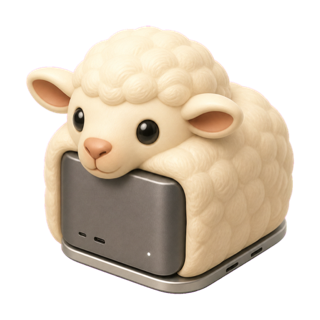
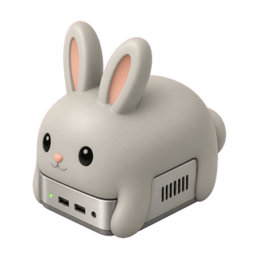
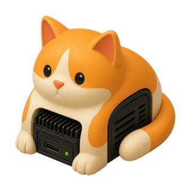
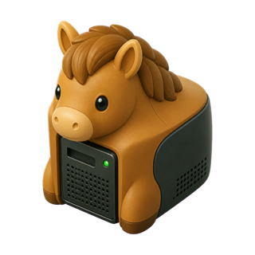
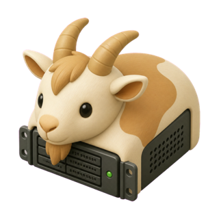

Every other monitor watches one machine.
You have a laptop, a mini under the desk, a Linux box in the closet, and a NAS with the backups on it. Your system monitor shows you exactly one of them.
Little Herd shows them side by side — one bar per machine, its name and its face underneath, a green dot when it’s live and a red one when it isn’t. One glance answers the question you actually have: which machine is busy, and is anything down?
A working recreation — click a machine, or switch metric.
See which agent is working, and where.
Claude Code and Codex sessions across every machine in the herd: the project each one is in, whether it’s running, waiting for you, or finished, and how far through its plan it has got.
Little Herd reads session metadata only — never your prompts, your responses, your command lines, or your keys. Nothing is sent anywhere.
A working recreation — sessions arrive, wait and finish.
Click a machine to see only that machine.
The bar you touched travels out of the overview and grows, so the thing you clicked is the thing you are looking at. The metric picker comes with it — switching from CPU to Disk re-lenses the machine you are already on rather than sending you back.
Under Disk that machine lists each volume with its free space, total capacity and a fill bar. Volumes sharing one APFS container are a single row, because they share a free-space pool and counting them separately would count the same free space several times; the row says how many volumes it covers.
Under CPU it lists what is running and roughly how many cores each is using. Under Memory, the largest app families with their own icons — so the thing worth quitting is the thing you see.
Also a working recreation — switch metric to re-lens this machine, or go back to the herd.
Nothing to install on the other machines.
No agent. No daemon. No password, no root, no companion app. Little Herd runs one short read-only command over the SSH connection you already have, once every ten seconds.
If you can ssh to it, Little Herd can watch it.
Your keys stay in your SSH config — Little Herd stores a hostname and, if you use one, the path to an identity file. A Synology is the one machine that needs an account, and its password goes in the login keychain, never in preferences.
Every machine gets a face.
Twelve of them: laptop, mini, studio, all-in-one, NUC, edge box, NAS, tower, GPU workstation, rack, coordinator, and cloud. Little Herd guesses which one fits while it’s discovering your machines. You get the last word.
 Laptop
Laptop Mini
Mini
Studio- All-in-one

NUC
Edge box NAS
NAS
Tower GPU workstation
GPU workstation
Rack- Coordinator
- Cloud
And the rest of it.
Memory pressure, not memory used
macOS’s own normal, warning and critical states — so cache doing its job doesn’t read as a problem.
Possible leaks, marked
An app whose memory has grown steadily across seven readings gets a red dot, with the measured growth behind it.
The volume that runs out first
Each machine’s fullest disk, with free space underneath. APFS volumes sharing a container are counted once.
What’s actually running
Per-machine process lists with approximate core usage, each with its own app icon.
It reconnects by itself
A machine that sleeps keeps its last values and says Unavailable, with a tooltip saying why. No dialog.
Signed, notarized, and updates itself
Developer ID and Apple notarization, with automatic updates.
Move work to the machine that’s free.
Your laptop is compiling and the mini is idle. Little Herd stops a Claude or Codex session on one machine and starts its successor on another, with the work intact.
Not process migration — that isn’t possible and isn’t wanted. The session writes its full context, and a transfer branch carries that plus anything uncommitted, so the destination checks out one ref and has all of it at once.
Your machines share one account, so a move rebalances silicon, not tokens. Little Herd says so rather than let you move work for a reason it cannot deliver. Machine to machine only: your phone can start a transfer and watch it, but is never a destination.
Cloud work, in the same window.
Codex cloud tasks listed beside your machines, so the herd is everything working for you rather than everything you own.
Moving cloud work down to a machine will use each vendor’s own command, never a protocol of Little Herd’s. The two are honestly different and the interface will say so: Codex cloud tasks can be listed, while Claude sessions can only be pulled by id, because nothing can enumerate them from here.
Little Herd is one part of it.
Watching the herd is the part we make. It is worth having because of everything around it — and the rest is free, built in, or open source. Here is the whole picture, in the order worth doing it.
Reach any of them from anywhere
One name per machine that works from the sofa or a hotel, with nothing exposed to the open internet.
TailscaleGet on with one short command
The same way in to every machine, and a new one inherits the herd instead of being set up by hand.
SSHFind your tools already there
The machine you connect to is somewhere you can work, not somewhere you have to set up first.
HomebrewStart something and walk away
Close the lid and the work carries on, because it was never running on your laptop.
tmuxUse another machine’s screen
For the things that only exist on a screen — a permission dialog, an installer, a first run.
Screen SharingRun several agents at once
And see at a glance which of them is working, which is done, and which is waiting on you.
HerdrBack every machine up to one place
One destination holding all of it, so the box in the closet becomes the machine that matters.
Time MachineFind out when one of them stops
A machine that dies unattended should tell you, rather than wait until you need it.
Healthchecks.ioThe source is public.
Read it, build it, change it, ship it inside your own work — anything except selling a competing product. Two years after each release goes out, that release becomes MIT.
FSL-1.1-MIT